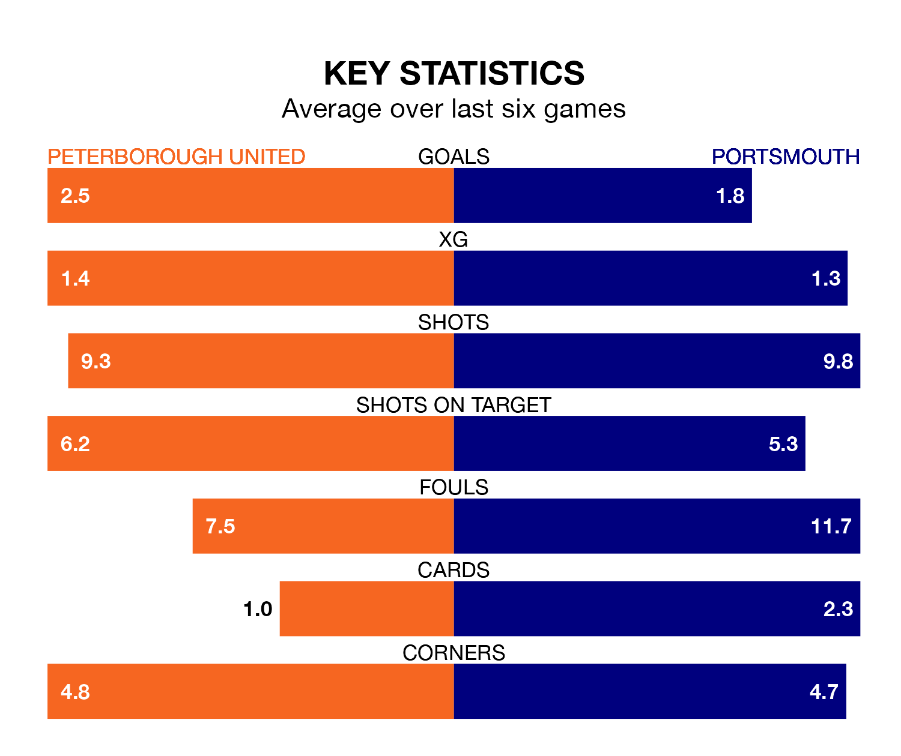

Two of EFL League One's top sides face each other at the Weston Homes Stadium in Saturday's kick-off, when fourth-placed Peterborough United host table-topping Portsmouth.
Peterborough have picked up 21 wins and eight draws from 37 games so far this season, and sit nine points below the visitors going into the 3pm match.
Pompey, meanwhile, have won 23 and drawn 11 of 38, picking up 80 points.
With 74 goals in 37 games so far this season, Peterborough are the league's highest scorers with 2.0 goals per game. And they are conceding fewer than average, letting in 45 goals at a rate of 1.2 per game.
Portsmouth are also above average scorers, with 1.6 goals per game, compared to a league average of 1.3. They have conceded 0.8 goals per game.
With Will Norris between the sticks, Pompey can rely on one of the league's safest pair of hands. He has kept 17 clean sheets in his 38 appearances this season, and no 'keeper has prevented the opposition scoring more often in EFL League One.
In United's net, Nicholas Bilokapic has 10 clean sheets in 27 games. He has conceded a goal every 76 minutes, 60% more often than the 118 minutes between goals for Norris.
In the last 10 years, Peterborough and Portsmouth have played each other on 15 occasions. Peterborough won six of them, Portsmouth seven, and they drew twice.
On average, the Posh scored 1.4 goals and Pompey 1.4 in those matches.
Their last meeting was on September 2, when Portsmouth won 3-1 at home.
The Posh are in fantastic form in EFL League One, with five wins and one loss from their last six games.
With four wins and two draws over that period, the away side's form is slightly worse – they have taken 14 points from 18, compared to the hosts' 15.
Peterborough's last match was on Wednesday, a 3-1 win against Stevenage, with Harrison Burrows, Jadel Katongo and Kwame Poku getting the goals for the Posh.
Portsmouth beat Burton Albion 2-1 last time out, on Tuesday, with Kusini Boja Yengi on the scoresheet.
Saturday's match will be refereed by Alex Chilowicz, who has taken charge of four EFL League One games so far this season, issuing no red cards and booking 14 players. He has not awarded any penalties.
He is yet to oversee a match featuring either Peterborough or Portsmouth this season.
Updated: 15:10 (UTC), 15/03/24